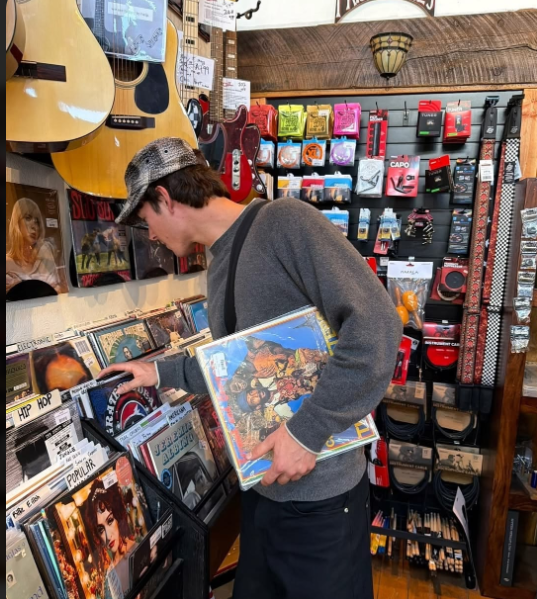
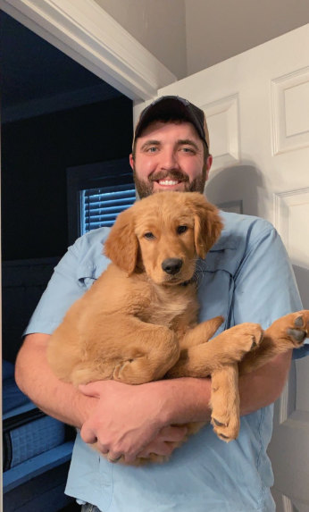
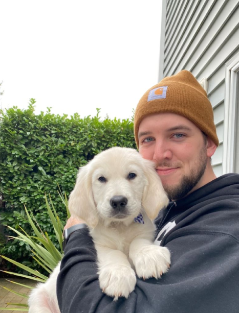
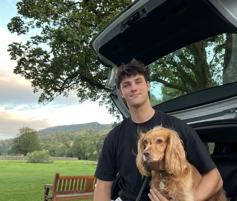

Good Dating-App Photo Examples
These are examples of the kind of natural, clear, interesting dating-app photos this guide is helping you create. If you use ChatGPT or Gemini, copying one of these images into the chat as a visual reference can help ground the output and improve it a lot.
Use these examples to create your own photos
These examples are not just here to look at. You can use them to help create your own version of the photo.
- If you have a paid membership, open ChatGPT. If not, open Gemini.
- Upload your own reference photos first. These tell the AI what your face, body, hair, and overall appearance look like.
- Upload the example photo you like. This gives the AI the pose, framing, setting, outfit, and overall feel to aim for.
- Paste this message underneath:
Use my uploaded photos as the reference for my face, body, hair, and overall appearance. Use this example image as the reference for the pose, framing, setting, and overall feel. Recreate this type of image with me as the person in it. Keep it realistic and make it look like a natural smartphone photo.
The example tells the AI what to create. Your reference photos make sure it still looks like you.




